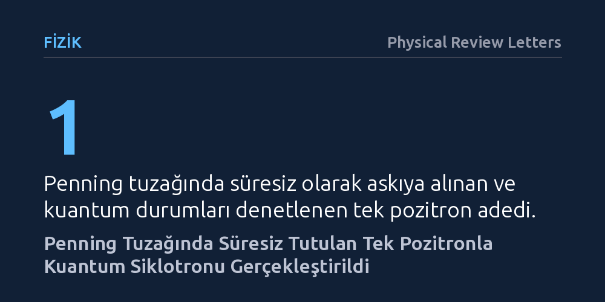

FIZIK · Physical Review Letters · 2026-10-23
Araştırmacılar, temel parçacık fiziğindeki CPT simetrisini lepton düzeyinde sınamak amacıyla tek bir pozitronu Penning tuzağında süresiz olarak askıya almayı başardı. Geliştirilen tek pozitronlu kuantum siklotronu, antimaddenin manyetik momentini kuantum hassasiyetinde ölçerek elektronla kıyaslamanın yolunu açtı.
Madde ile antimaddenin doğa yasaları karşısında kusursuz bir simetriye sahip olup olmadığını en yüksek hassasiyetle sınayarak modern fiziğin temel kabullerini test etme imkânı sunar.

Modern parçacık fiziğinin üzerine kurulu olduğu Standart Model ve kuantum alan kuramı, CPT değişmezliği adı verilen temel bir simetri ilkesine dayanır. Bu ilke; bir parçacığı karşıt parçacığıyla değiştirdiğimizde, uzaydaki koordinatlarını aynaladığımızda ve zamanın akış yönünü tersine çevirdiğimizde doğa yasalarının tamamen aynı kalması gerektiğini söyler. Evrendeki madde ve antimadde dengesizliğini anlamaya çalışan fizikçiler için bu simetrinin leptonlar düzeyinde geçerli olup olmadığını sınamak, kuramsal fiziğin en kritik meselelerinden biridir.
Lepton sektöründe bu simetriyi test etmenin en doğrudan ve duyarlı yöntemi, elektron ile onun antimadde karşılığı olan pozitronun manyetik momentlerini eşi görülmemiş bir hassasiyetle karşılaştırmaktır. Manyetik moment, bir parçacığın manyetik alanda nasıl davrandığını ve içsel dönüşünü belirleyen ayırt edici bir özelliktir. Ancak antimaddenin maddeyle temas ettiği anda yok olması ve tekil bir pozitronun kararlı bir biçimde tutulmasının güçlüğü, hassas kuantum ölçümlerinin önünde uzun süredir aşılması gereken büyük bir teknik engel olarak duruyordu.
Bu engeli aşmak için araştırmacılar, güçlü bir manyetik alan ile statik elektrik alanını birleştiren Penning tuzağı yöntemini kullandı. Penning tuzağı, elektrik yüklü bir parçacığı hiçbir fiziksel duvara temas ettirmeden uzay boşluğunda hapsedebilen son derece hassas bir laboratuvar aygıtıdır. Antimaddeden oluşan bir pozitronun sıradan madde atomlarıyla temas ederek anında yok olmasını engellemek için böyle temassız bir yalıtım ortamı zorunludur.
Deney kapsamında sadece tek bir pozitron yakalanmakla kalınmadı; bu parçacık manyetik alan içinde dağılmadan süresiz olarak askıda tutuldu. Dahası, parçacığın tuzak içerisindeki dairesel hareketi, kuantum mekaniğinin izin verdiği ayrık enerji düzeylerine oturtuldu. Böylece klasik hareketin yol açtığı termal belirsizlikler ve dalgalanmalar bertaraf edilerek tekil kuantum durumlarının adım adım denetlenebildiği bir kuantum siklotronu düzeneği kuruldu.
Çalışmada ulaşılan en önemli sonuç, tek bir pozitronun kuantum durumlarının bütünüyle kontrol altına alındığı bir kuantum siklotronunun deneysel olarak başarıyla gerçekleştirilmesidir. Klasik siklotron hareketinde ölçümler sürekli salınımlara ve gürültüye bağlıyken, kuantum siklotronunda parçacığın enerji seviyeleri arasındaki kuantum sıçramaları tek tek gözlemlenebilmektedir.
Bu yöntem, tek bir pozitronun manyetik momentinin klasik yöntemlerin erişebildiği sınırların çok ötesinde bir hassasiyetle ölçülmesini olanaklı kılmaktadır. Araştırma ekibi, antimaddenin bu temel üyesini laboratuvar ortamında kararlı bir biçimde askıya alarak kuantum hassasiyetinde ölçümler için hazır hale getirmiştir.
Bu deneysel aygıtın hayata geçirilmesi, elektron ve pozitron kuantum siklotronları arasında doğrudan ve yüksek doğruluklu bir manyetik moment karşılaştırması yapılmasına olanak tanımaktadır. İki parçacık arasında yapılacak bu kıyaslama, Standart Model'in CPT simetrisine lepton ailesinde uygulanabilecek en katı ve tavizsiz sınavı oluşturacaktır.
Önümüzdeki dönemde bu düzenekle yapılacak ölçümlerde elektron ile pozitron arasında en ufak bir fark tespit edilirse, parçacık fiziğinin temel ilkelerinin gözden geçirilmesi gerekecektir. İki ölçümün kusursuz bir biçimde örtüşmesi durumunda ise doğanın temel simetri ilkelerinden biri bir kez daha rekor bir hassasiyetle doğrulanmış olacaktır.